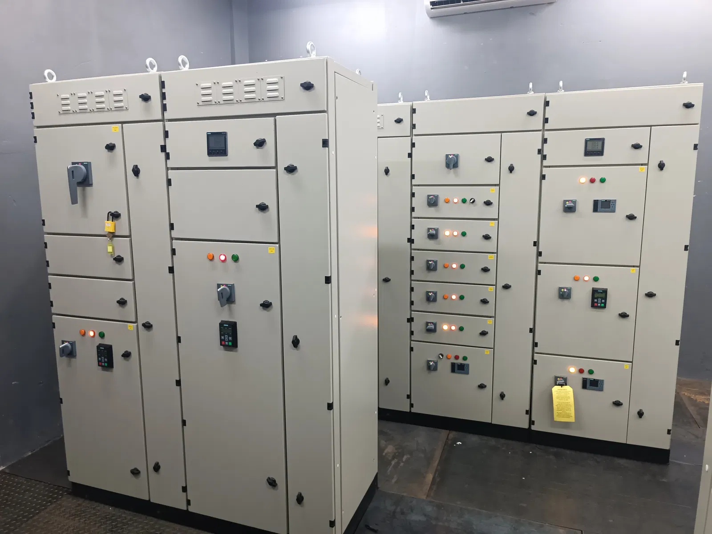
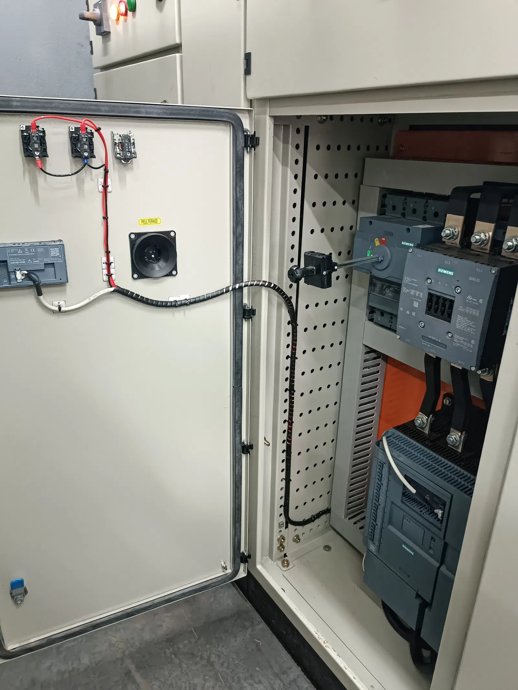
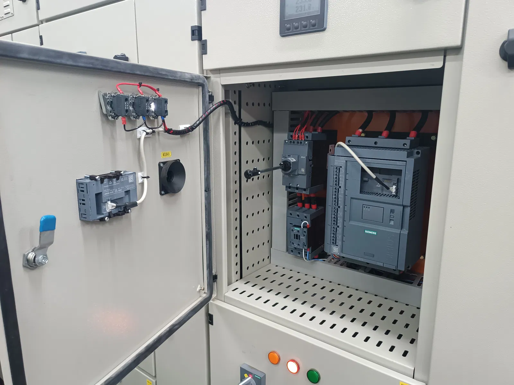
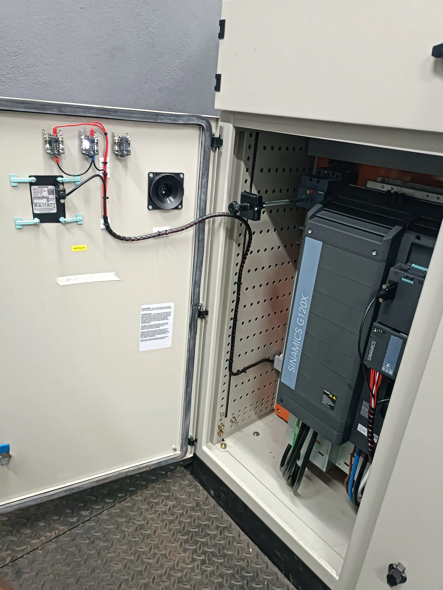

Una fábrica de tableros eléctricos no es solo un taller de ensamblaje: es el punto donde la ingeniería eléctrica se traduce en un equipo listo para operar en planta. En Paraguay, las industrias necesitan tableros de potencia, distribución, CCM y control que soporten turnos exigentes, ampliaciones de línea y condiciones reales de campo.
En Power Control Paraguay diseñamos, fabricamos e instalamos tableros con base operativa en Alto Paraná y atención a plantas en distintas regiones del país.
Qué tipos de tableros fabricamos
- Tableros de potencia y distribución — alimentación principal y subdistribución por sectores
- CCM (Centro de Control de Motores) — arranques, protecciones y comando de motores
- Tableros de control y automatización — PLC, HMI, variadores e I/O de proceso
- Tableros de transferencia y generadores — respaldo y conmutación de energía
- Ampliaciones y retrofit — modificación de CCM existentes para más potencia o nuevas máquinas
Cómo se fabrica un tablero industrial bien hecho
- Relevamiento de cargas, espacio disponible y normas aplicables
- Diseño eléctrico: unifilar, multifilar, selectividad y lista de materiales
- Montaje en banco: canalización, cableado, etiquetado y bornes
- Pruebas en taller: continuidad, aislación y secuencia de comando
- Instalación en planta, comisionamiento y entrega de documentación
El orden importa. Un tablero bien documentado reduce tiempos de mantenimiento y facilita futuras ampliaciones sin improvisar en campo.


CCM y distribución: el corazón eléctrico de la planta
En silos, industrias plásticas, madereras y líneas de proceso, el CCM concentra el comando de motores críticos. Un diseño correcto contempla protecciones coordinadas, accesibilidad para mantenimiento y espacio de reserva para crecer. Fabricamos y modificamos CCM cuando la planta suma máquinas o necesita más potencia sin reemplazar toda la infraestructura.
Tablero eléctrico + automatización
Muchos proyectos no terminan en el cableado de potencia: integran PLC, variadores, sensores y, si corresponde, SCADA o telemetría. Fabricar el tablero y programar el control en el mismo equipo evita incompatibilidades entre el diseño eléctrico y la lógica de proceso.

Qué pedir al elegir un fabricante de tableros en Paraguay
- Planos unifilares y de disposición actualizados al cierre del proyecto
- Componentes de marcas con soporte y repuestos en la región
- Pruebas de aislación (megado) y protocolo de puesta en marcha
- Etiquetado claro de circuitos, bornes y protecciones
- Capacidad de instalar, comisionar y dar soporte postventa
¿Necesitás fabricar o ampliar un tablero eléctrico para tu planta?
Ver proyectos eléctricos